Finding foreign objects under glare and rolling on an iron-ore conveyor belt, by lining up several camera frames with the belt's own motion.
A single top camera watches an iron-ore belt for foreign objects. A glare spot or motion blur can wipe out an object in one frame. The belt moves at a measurable speed, though, so the same object shows up in many frames at a predictable position. BeltPulse-Net lines those frames up using the belt's motion and combines them, so one bad frame matters less.
jaspilito_4), motion blur and rolling, and every trained
multi-view model beats the single-frame model. The full pipeline runs at about 7 ms per frame (140–158 fps) on a laptop RTX 3050.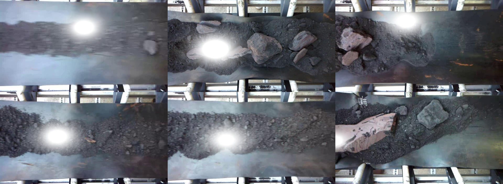
Mendeley In-lab Image Dataset of Foreign Objects and Anomalies in Iron Ore Conveyor Belts (CC BY 4.0).
| split | videos | 3-view samples | 8-view samples |
|---|---|---|---|
| train | 11 videos (iron_ore 1/2/5/6, 7_wood 1/2, canga2, jaspilito 1/3, things 1/2) | 2,716 | 2,644 |
| validation | canga, jaspilito_2, iron_ore_3 | 470 | 458 |
| test (never seen) | 7_wood_3, canga3, jaspilito_4 (real glare + rolling), things_3, iron_ore_4 (ore only) | 508 | 490 |
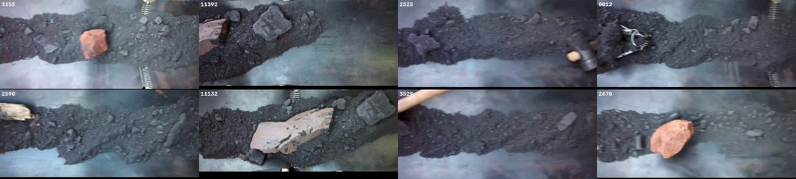
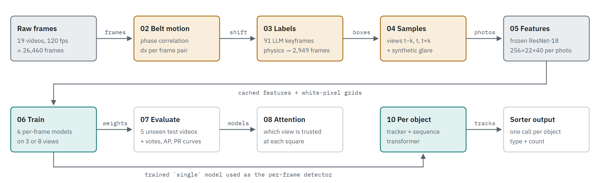
Phase correlation between consecutive frames gives the belt shift in pixels. The vertical shift is ≈ 0 in all 19 videos, so the belt moves along X only. The speed ranges from ~0 (belt stopped) to 48 px per frame. The shift is used twice: to copy labels between frames, and to line up views inside the model.
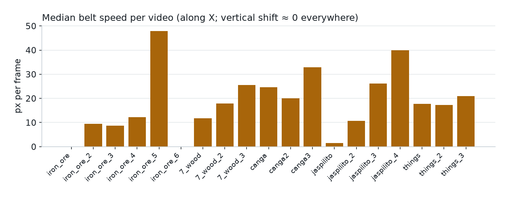
An LLM drew boxes on 67 keyframes read from contact sheets.
Boxes were copied to neighbouring frames using the measured belt shift: 2,858 more frames.
Two-keyframe blending, plus 24 extra LLM keyframes where objects roll (flagged when > 60 px off). Flagged intervals dropped from 14 to 7.
All labels were reviewed and corrected by hand before the final training runs.
Result: 2,949 labelled frames, 3,355 object boxes.
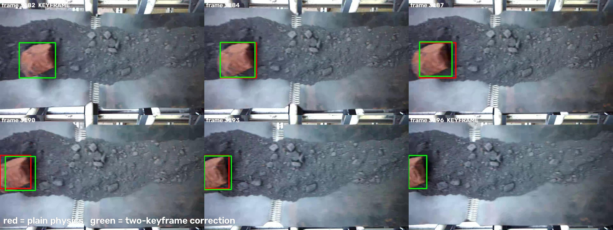
Frames are halved to 640 × 352, which is 40 × 22 squares of 16 px. A frozen ResNet-18 (up to layer3) gives 256 numbers per square. A square counts as "object" if at least 25 % of it lies inside a box.
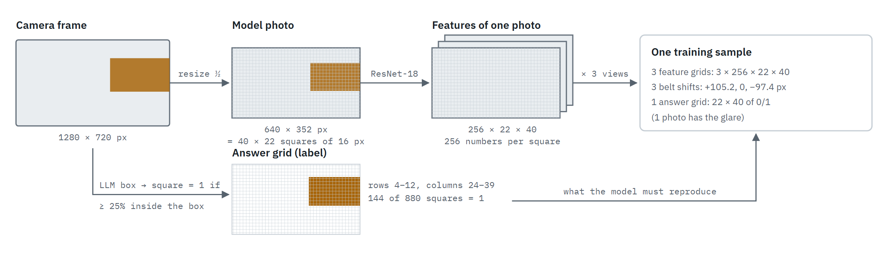
| 3-view variant | 8-view variant (T8w7) | |
|---|---|---|
| views per sample | t − k, t, t + k | t − 3k … t + 4k |
| k | smallest gap where the belt moved ≥ 96 px | same |
| attention search window | 3 × 3 squares | 7 × 7 squares (follows objects that roll off the belt path) |
| simulated glare | one random view (train); view t in half of test | each view with p = 0.3; view t in half of test |
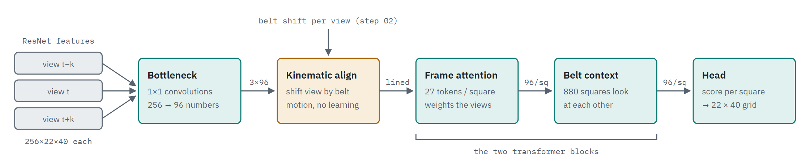
| block | parameters |
|---|---|
| position embeddings (880 squares × 96) | 84,480 |
| belt context (spatial transformer over all squares) | 74,784 |
| frame attention (q/k/v/o, 4 heads × 24) | 38,400 |
| feed-forward + norms | 37,536 |
| bottleneck 256 → 96 | 34,176 |
| head | 97 |
Each view is slid by the belt shift, so the object sits in the same square in every view. This is fixed physics with no parameters. A search window around each square absorbs rolling and labelling error.
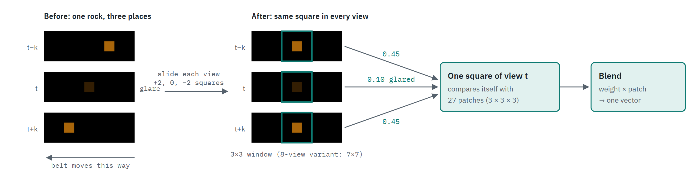
The learned matrices W_q and W_k turn patches into queries and keys. A softmax over the match scores gives weights that sum to 1. A glared view gets a low weight, so the blend relies on the clean views.
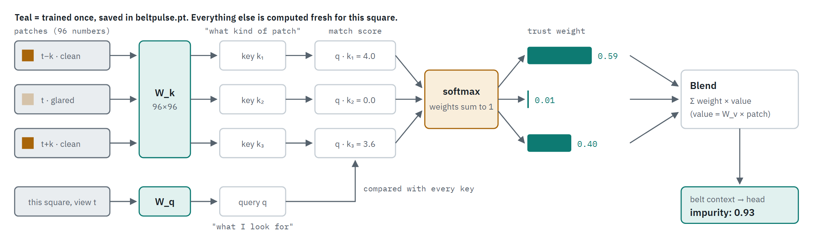
All models share the backbone, bottleneck, belt-context transformer, head, loss and training schedule. Only the fusion step differs, so differences in results come from fusion. BeltPulse-Net is the whole system (belt motion, physics labels, aligned multi-view samples and the fusion models); cross-frame attention is one of its fusion options.
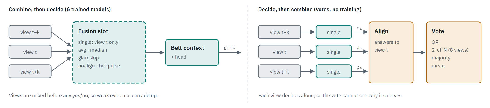
| model | how the views are combined |
|---|---|
single | target frame only (reference) |
avg | aligned feature average |
median | aligned feature median |
glareskip | average, skipping washed-out views (fixed rule) |
noalign | cross-frame attention, no belt alignment |
beltpulse | cross-frame attention with belt alignment |
| votes | single answers aligned, then OR / 2-of-N / majority / mean (no training) |
| setting | value |
|---|---|
| loss | BCE (object squares × 5) + Dice |
| optimiser | AdamW, lr 5e-4, weight decay 1e-2, cosine, 30 epochs |
| batch | 8 (3 views), 4 (8 views) |
| checkpoint | best validation object IoU |
| hardware | laptop RTX 3050, 4 GB |
| time | 94 min for 6 models (3 views) · 6.2 h for 6 models (8 views) |
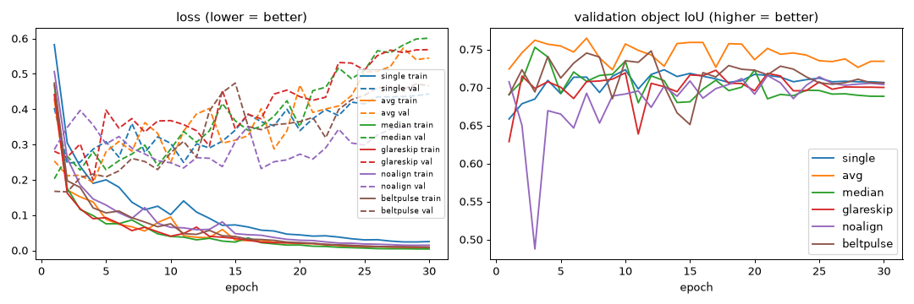
Object IoU is the overlap between predicted and true impurity squares, pooled over all test samples. Recall under glare is the share of object squares hidden by glare in the target frame that are still found.
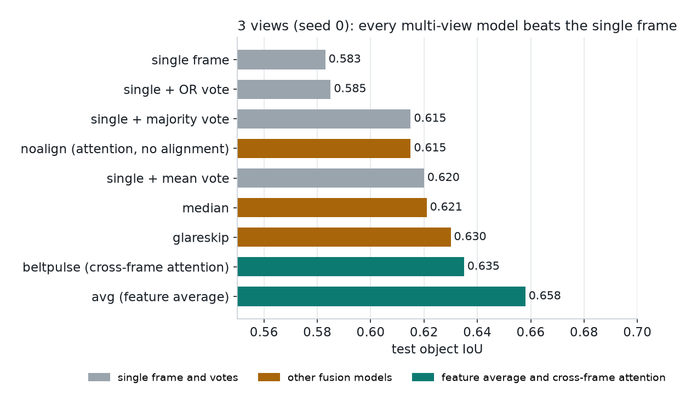
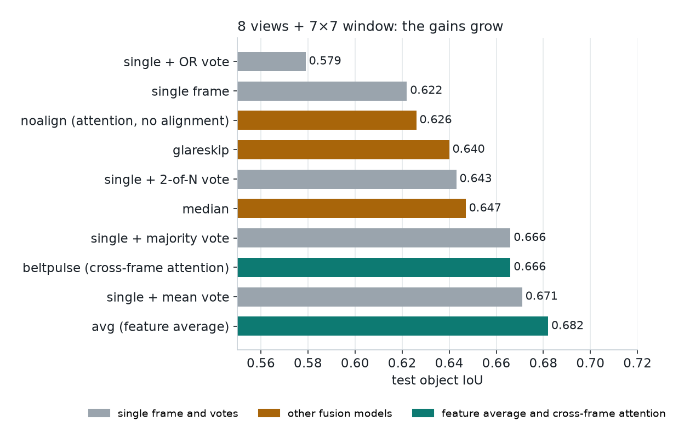
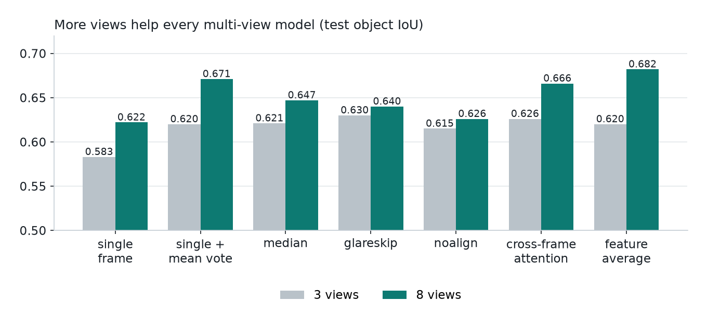
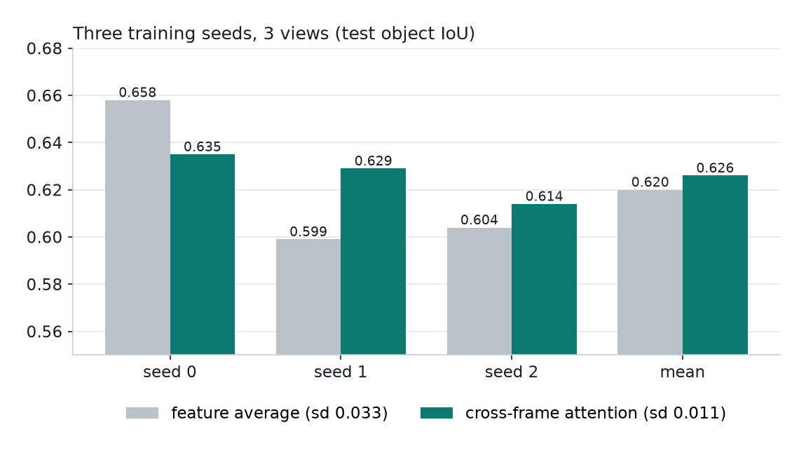
| test IoU (3 views) | seed 0 | seed 1 | seed 2 | mean ± sd |
|---|---|---|---|---|
| feature average | 0.658 | 0.599 | 0.604 | 0.620 ± 0.033 |
| cross-frame attention | 0.635 | 0.629 | 0.614 | 0.626 ± 0.011 |
things_3: ~2,900 vs 5,400–6,300 squares on seeds 1–2).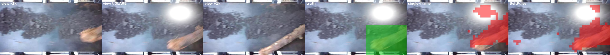
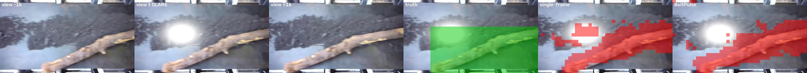
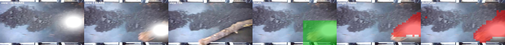
jaspilito_4 is the only test video with real (not simulated) glare, strong motion blur and two rolling intervals.
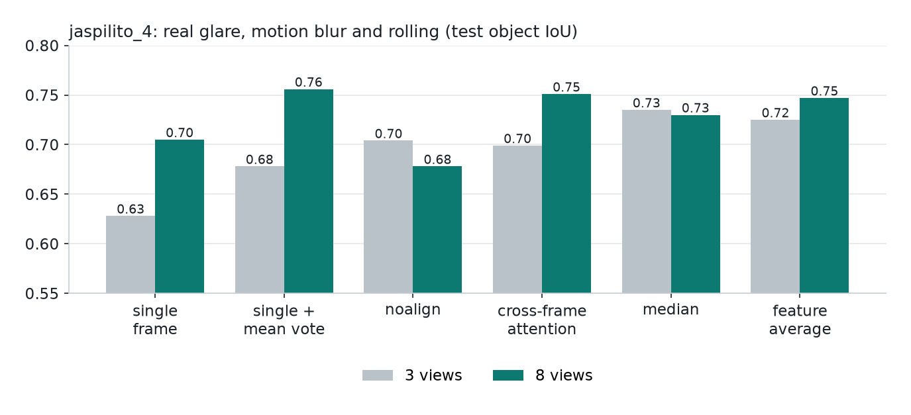
canga3: attention 0.730 vs noalign 0.612 (3 views), 0.726 vs 0.607 (8 views), with about 1,500 vs 3,800 false-alarm squares.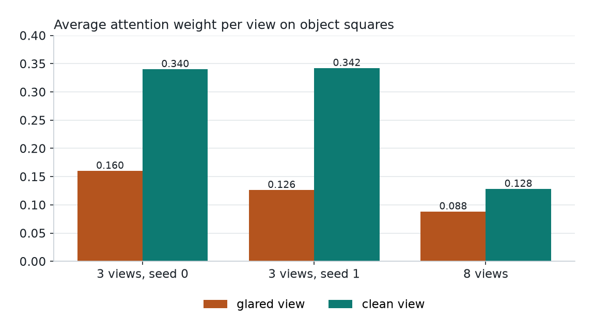
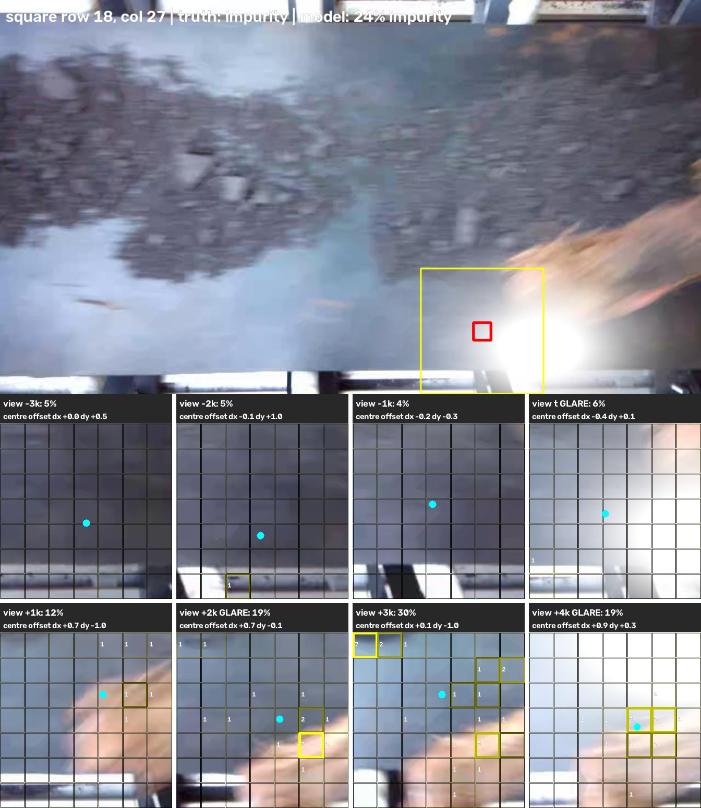
Each cell is object IoU. iron_ore_4 is ore only, so any detection there is a false alarm; about 162,800 squares were scored on it.
| model | 7_wood_3 | canga3 | jaspilito_4 | things_3 | iron_ore_4 false alarms |
|---|---|---|---|---|---|
| single frame | 0.555 | 0.679 | 0.705 | 0.654 | 220 |
| single + mean vote | 0.587 | 0.759 | 0.756 | 0.702 | 53 |
| median | 0.564 | 0.717 | 0.730 | 0.685 | 29 |
| glareskip | 0.581 | 0.723 | 0.538 | 0.702 | 21 |
| noalign | 0.614 | 0.607 | 0.678 | 0.638 | 0 |
| cross-frame attention | 0.601 | 0.726 | 0.751 | 0.707 | 518 |
| feature average | 0.595 | 0.769 | 0.747 | 0.731 | 25 |
canga3, things_3 and 7_wood_3, and all except glareskip do on jaspilito_4.
Without belt alignment, noalign falls below the single frame on three of the four object videos.glareskip's fixed whiteness rule fails on real glare (0.538): it drops views that still show the object. Learned fusion avoids this.Foreign objects are detected under glare, motion blur and rolling by fusing belt-aligned views. Every trained multi-view model beats the single frame (8 views: 0.682 vs 0.622 IoU; recall under glare 0.88 vs 0.81).
The physics shift adds +0.02 (3 views) to +0.04 (8 views) IoU, and +0.12 on canga3, at no training cost.
8 views with a 7 × 7 window beat 3 views for every multi-view model: feature average 0.620 → 0.682, attention 0.626 → 0.666, mean vote 0.620 → 0.671.
Cross-frame attention matches feature averaging in accuracy, is 3× more stable across seeds, gives fewer false alarms on most videos, and provides a readable trust weight per view.
avg and beltpulse at 3 views; the 8-view run is one seed, so gaps under ~0.03 there are not significant.jaspilito_4 is the only real-glare test video, and multi-view still gains +0.05 to +0.11 IoU there.